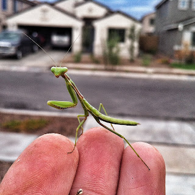

Recovered weblog entry
Mantodea {Praying Mantis}

I saw this little guy while I was in the front yard, taking care of weeds while the ground was still soft from the rain. I've always been fascinated by these creatures. They seem so gentle and, dare I say, intelligent. He looked at me quizzically for quite a while before taking advantage of his new vista; before long, the kids found me and were begging to hold him.
I set him back down inside my garden, silently hoping he would stay.
Taken with the wife's iPhone 4.
Edited in Snapseed.